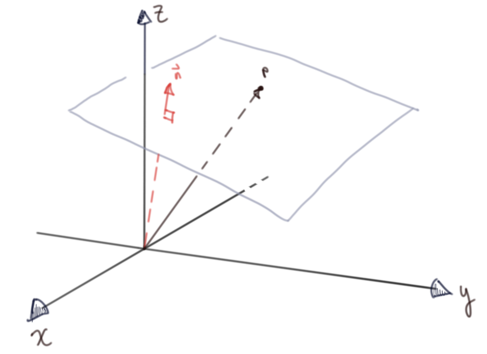
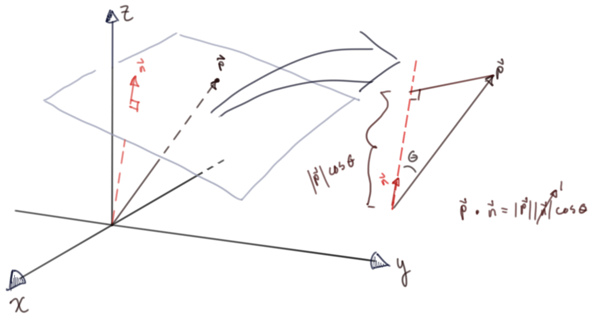
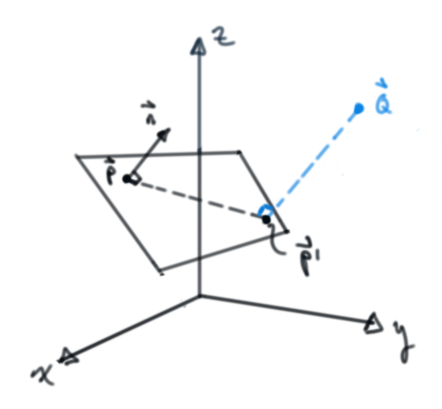
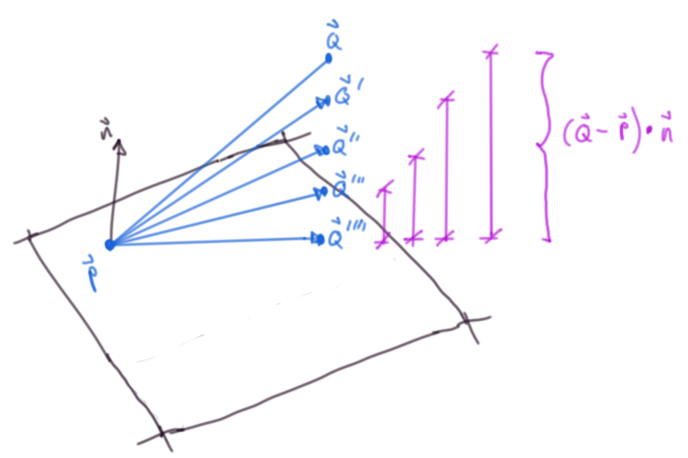

Table of Contents
Motivation
While watching Casey Muratori write a raytracer recently, I noticed he characterized the equation of a plane equation in a weird way, so I decided to write out a quick derivation.
Problem Set Up
What seemed weird to me was his expression for a plane: \(N^T \cdot P + d = 0\) Where \(N^T\) is a normal to the plane, P is a point on the plane and d is the distance to the plane. The operator is the scalar product.
Non-standard notation aside, this just isn't an equation to generate a plane.

Figure 1: Arbitrary plane with a point on the plane

Figure 2: \(\vec{N} \cdot \vec{P}\) is the distance from the origin to the plane
Let's make this explicit by showing the distance to a plane from any arbitrary point (not just the origin) using two different means
Distance to a plane
Via projection of point onto normal:
Repeating our drawing from above for an arbitrary point – feel free to skip this one, just keeping things tidy.

Figure 3: The projection length of the relative position vector between an arbitrary position \(\vec{Q}\) and a point on the plane \(\vec{P}\) with the plane normal \(\vec{n}\)

Figure 4: Again, same setup from a different perspective, still slowing dying from boredom
The dot product of the relative position vector and the normal:
\(\vec{QP} = \vec{Q} - \vec{P}\)
By definition of the dot product
\[\vec{QP} \cdot \vec{n} = \lvert \lvert \vec{QP} \rvert \rvert \lvert \lvert \vec{n} \rvert \rvert \cos{\theta}\]
\[\implies \lvert \lvert \vec{QP} \rvert \rvert \cos{\theta} = \frac{\vec{QP} \cdot \vec{n}}{ \lvert \lvert \vec{n} \rvert \rvert}\]
In the case that the normal is unit length, this simplifies to our first result
Via ray intersection
It's always encouraging to see the same result in multiple ways:

Figure 5: The first diagram with the ray intersection point \(\vec{P}^\prime\)

Figure 6: The same as above but from a different perspective
The vector equation of a ray (really a line segment – we just discard negative scaling values ℓ for the ray): \(\vec{ray} = \vec{r_0} + ℓ \vec{rd}\)
Where \(\vec{rd}\) is a unit vector in the ray direction.
In the case of just looking for the distance to the plane, the ray direction is \(\pm\) the unit vector of whatever the normal vector happens to be depending on what side of the plane the ray origin is on; where the ray origin is our arbitrary point \(Q\)
\(\vec{rd} = \frac{\vec{n}}{\lvert \lvert \vec{n} \rvert \rvert}\) ; \(\vec{r_0} = \vec{Q}\)
Substituting this into the plane equation:
\(\left( \vec{Q} - ℓ \frac{\vec{n}}{\lvert \lvert \vec{n} \rvert \rvert} - \vec{P} \right) \cdot \vec{n} = 0\)
Solving for ℓ: (Rearranging and using properties of the dot product (distributive & \(\vec{a} \cdot \vec{a} = {\lvert \lvert \vec{a} \rvert \rvert}^2\)))
\(\left(\vec{Q} - \vec{P} \right) \cdot \vec{n} - ℓ \frac{\vec{n}}{\lvert \lvert \vec{n} \rvert \rvert} \cdot \vec{n} = 0\)
\(\left(\vec{Q} - \vec{P} \right) \cdot \vec{n} - ℓ \frac{{\lvert \lvert \vec{n} \rvert \rvert}^2}{\lvert \lvert \vec{n} \rvert \rvert} = 0\)
\(\vec{QP} \cdot \vec{n} - ℓ \lvert \lvert \vec{n} \rvert \rvert = 0\)
\(ℓ = \frac{\vec{QP} \cdot \vec{n}}{\lvert \lvert \vec{n} \rvert \rvert}\)
And again, in the case that the normal is unit length, this simplifies to our first result.
Equation of a plane
Now that we've gorily (most might say unnecessarily) shown that the first expression \(\hat{n} \cdot \vec{P} + d = 0\) is indeed the distance from the origin to the plane, we can now show that the second expression is an accidental sleight of hand by deriving the equation of a plane.
From *wikipedia*
In a manner analogous to the way lines in a two-dimensional space are described using a point-slope form for their equations, planes in a three dimensional space have a natural description using a point in the plane and a vector orthogonal to it (the normal vector) to indicate its "inclination".
Some visual intuition:

Figure 7: The dot product of a relative position vector and a normal must be zero to be on a plane
A plane is defined for all \(\vec{P^{\prime}}\) if \(\left( \vec{P^{\prime}} - \vec{P} \right) \cdot \vec{n} = 0\), i.e. their dot product is zero (they're orthogonal to each other)
We can easily recover the more familiar implicit form (\(Ax + By + Cz = d\)) if we write out the expression in scalar form:
Some chosen inclination (a normal to the plane)
\(\vec{n} = \left( A, B, C \right)\) And some chosen point on the plane
\(\vec{P} = \left( a, b, c \right)\) And a variable point \(\vec{P^{\prime}}\)
\(\vec{P^{\prime}} = \left( x, y, z \right)\)
\(\implies \vec{P^{\prime}} - \vec{P} = \left(x - a, y - b, z - c \right)\)
And our plane is then: \(\left( \vec{P^{\prime}} - \vec{P} \right) \cdot \vec{n} = 0 = \left(x - a, y - b, z - c \right) \cdot \left( A, B, C \right)\)
Expanding the dot product: \(\left(x - a, y - b, z - c \right) \cdot \left( A, B, C \right) = A\left(x - a \right) + B\left(y - b \right) + C\left(z - b \right)\)
Distributing and collecting constants: \(A\left(x - a \right) + B\left(y - b \right) + C\left(z - b \right) = Ax + By + Cz - \left(Aa + Bb + Cc \right) = 0\)
Rewriting the constant values as a new constant \(d\): let $d = Aa + Bb + Cc$$ \(\implies Ax + By + Cz = d\)
It's probably overkill at this point, but if you're still not convinced this is a plane, think about the reduced version in 2D, \(By+Cx = \tilde{d}\). This is just a line - for some \(x\), there's some \(y\), extending into 3D is no different.
Ray Plane Intersection
Finding the necessary distance a given ray (that is to say a given direction \(\vec{rd}\)) should travel to intersect with a plane is pretty straight forward. If you're interested in this kind of stuff and unitiated, see this introduction I wrote.
Ray: \(\vec{ro} + t\vec{rd}\)
Equation for Plane \(\left( \vec{P^{\prime}} - \vec{P} \right) \cdot \vec{n} = 0\)
Substituting the intersecting point on the plane \(\vec{P^{\prime}}\) for the rays position vector:
\(\left( \left( \vec{ro} + t\vec{rd} \right) - \vec{P} \right) \cdot \vec{n} = 0\)
By properties of dot products: \[\implies \vec{ro} \cdot \vec{n} + t \vec{rd} \cdot \vec{n} - \vec{P} \cdot \vec{n} = 0\]
Remembering that \(\vec{P} \cdot \vec{n}\) is the distance from the origin to the plane: \[\implies \vec{ro} \cdot \vec{n} + t \vec{rd} \cdot \vec{n} - d = 0\] (Notice how similar this is to the original expression from the video, a small sleight of hand in my opinion) \[\implies t = \frac{d - \vec{ro} \cdot \vec{n}}{\vec{rd} \cdot \vec{n}}\]
Rational functions are discontinuous with a zero denominator; \(\vec{rd} \cdot \vec{n} = 0\)
Again by dot product properties, this implies that \(\vec{n}\) and \(\vec{rd}\) are orthogonal to each other, or the ray direction is parallel to the plane So the equation seems to make physical sense.
Wrapping Up
This was kind of a dumb derivation. I started writing it because it was wrong to say that the first expression \(\hat{n} \cdot \vec{P} + d = 0\) is the equation of a plane. It's really a kind of sleight of hand/ accident (sign error?) that the video gets the t ray-intersection scalar out of their equation. Planes and Ray-Plane intersections are basic concepts, but it's (always?) good to refresh fundamentals. If nothing else, it hopefully fits the handmade ethos.
I wish programming culture used more standard math notation & was more explicit in derivations / language, but I'm sure programmers are even more annoyed whenever they're forced to see scientists' unfortunate Matlab/ Python / Julia / R code.
Misc.
Here's a less verbose article from a graphics programmer I like.